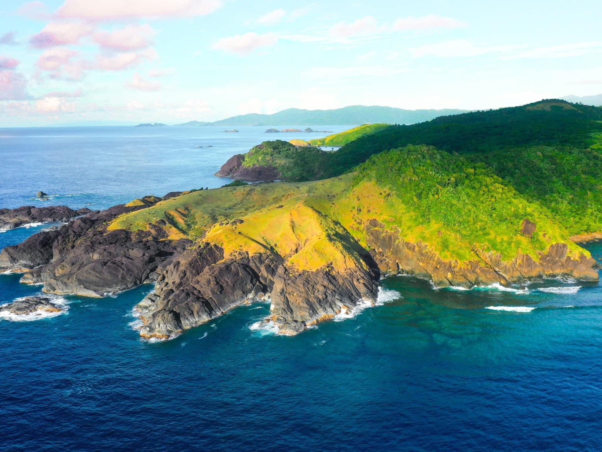
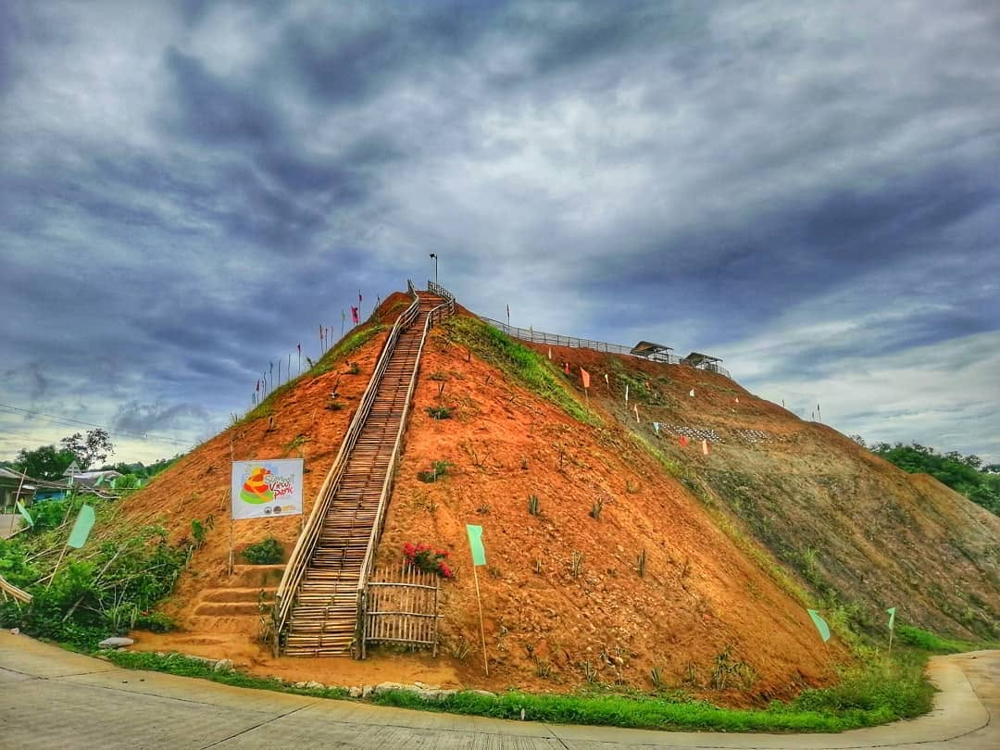

Binurong Point
Guinsaanan, Baras, Catanduanes
Binurong Point offers a breathtaking view that will leave you speechless once you reached the place. You can enjoy the rolling hills, cliffs,
and panoramic ocean views, making it a perfect place to relax and appreciate the nature.

Hiyop Highlands
Hiyop, Pandan, Catanduanes
Hiyop Highlands is one of the stunning attractions in the region, with its scenic landscape that stretches from the mountains to the sea.
It is a perfect place to enjoy the view of the town and the ocean nearby.

Mamangal Beach
Balite, Virac, Catanduanes
Mamangal Beach is known for its crystal-clear water, calm waves and shining white sand. It is a great place for taking photos and swimming in the sea.

Maribina Falls
Bato, Catanduanes
Maribina Falls is one of the most famous and accessible waterfalls in Catanduanes, with its refreshingly cold water and scenic view that will wash your worries away.

Summit View Park
Viga, Catanduanes
Summit View Park is the perfect spot to witness a breathtaking view from the top. The fresh air and natural beauty of the region welcome you, making it an ideal place
to relax and take in the scenery.
